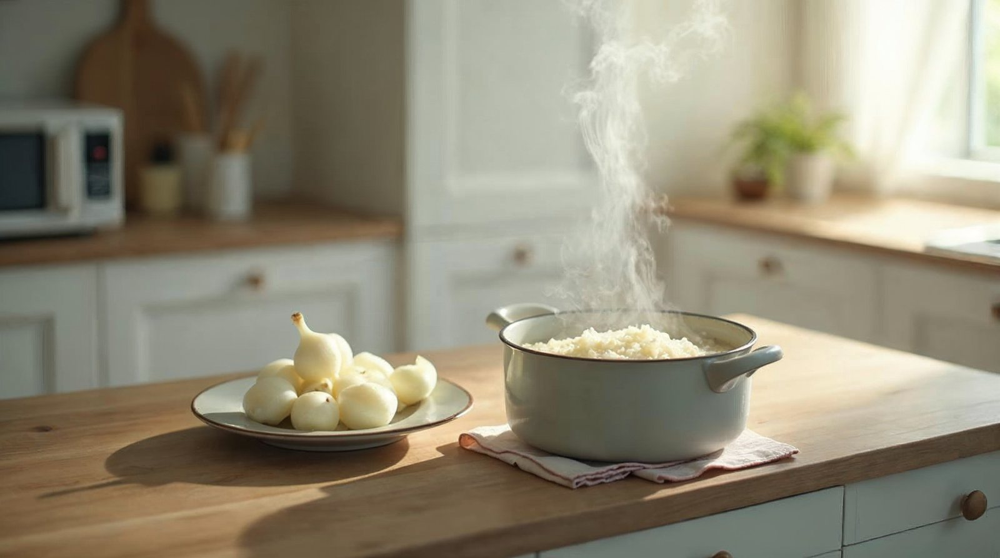
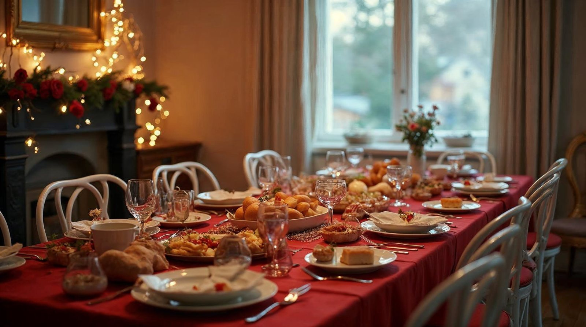
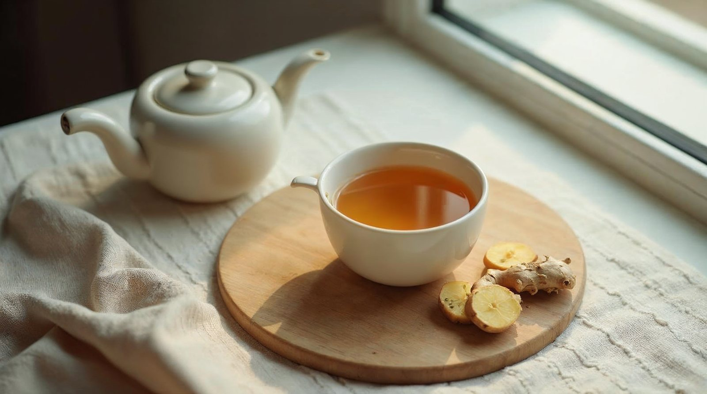

이종호 한의사 감수좋은꿈참사랑한의원 대표원장 (한의사 면허번호 19769)발행 2026-11-26 · 수정 2026-11-26
이 글의 차례
바쁜 점심시간, 전화를 받으며 김밥을 몇 개 집어 먹었습니다. 오후 회의에 들어가 앉았는데 명치가 돌덩이를 얹은 듯 묵직하고, 식은땀이 나면서 머리까지 지끈거립니다. 손끝이 차가워지고 속이 메슥거려 회의 내용이 귀에 들어오지 않습니다. '또 체했구나.' 이런 날이 한 달에도 몇 번씩 찾아온다고 말씀하시는 분이 많습니다.
체했다는 말은 우리에게 무척 익숙합니다. 어릴 때 할머니가 등을 두드려 주시던 기억을 가진 분도 많으실 겁니다. 그런데 어른이 되어서도 조금만 급하게 먹거나 신경 쓰는 일이 있으면 어김없이 체한다면, 그저 소화력이 약하다고 넘기기보다 무엇이 체기를 부르는지 한번 짚어 볼 때입니다.
진료실에서 저는 체하는 분께 무엇을 드셨는지와 함께 어떤 마음으로, 어떤 자세로 드셨는지를 꼭 여쭙니다. 같은 음식이라도 쫓기듯 먹은 날과 편하게 먹은 날의 속은 전혀 다르기 때문입니다.
이 글에서는 체한다는 것이 몸에서 어떤 상태인지, 왜 어떤 분은 유난히 자주 체하는지, 비슷해 보이는 다른 증상과는 어떻게 구분하는지, 그리고 일상에서 무엇부터 바꿀 수 있는지를 차례로 말씀드리겠습니다.
체한다는 것은 몸에서 어떤 상태인가요
흔히 체했다고 말하는 상태는 음식이 위에서 장으로 잘 내려가지 못하고 머물러 있는 느낌에 가깝습니다. 위는 음식을 담아 두었다가 리듬 있게 움직여 장으로 내려보내는데, 이 움직임이 갑자기 멈칫하거나 느려지면 명치가 꽉 막히고 더부룩해집니다.
체했을 때 머리가 아프고 손발이 차가워지는 것도 흔합니다. 위가 불편해지면 몸이 긴장 상태로 바뀌면서 손발 끝으로 가는 피의 흐름이 줄고, 목과 어깨, 머리 쪽 근육이 굳기 쉽습니다. 그래서 체기가 있을 때 등과 어깨까지 결린다는 분도 많습니다.
의학 용어로는 기능성 소화불량이나 급성 위장 장애와 겹치는 부분이 있습니다. 검사에서는 뚜렷한 이상이 보이지 않는데 위의 움직임과 감각이 예민해져 불편이 생기는 경우가 많습니다.
그래서 체기가 잦은 분들 가운데는 내시경을 받아 보았는데 별 이상이 없다는 말을 듣고 오히려 더 답답해하시는 경우가 많습니다. 검사에서 이상이 없다는 것은 다행스러운 소식이고, 그다음은 위가 왜 예민해졌는지를 생활 속에서 찾아보는 일입니다.
왜 어떤 사람은 유난히 자주 체할까요
가장 큰 이유는 먹는 방식입니다. 급하게 먹으면 음식이 잘게 부서지지 않은 채 위로 들어오고, 공기도 함께 삼키게 됩니다. 위는 큰 덩어리를 한꺼번에 받아 처리해야 하니 버거워집니다. 바쁜 직장인, 서서 먹거나 이동 중에 먹는 분들이 자주 체하는 것은 그래서입니다.
두 번째는 긴장과 스트레스입니다. 화가 난 상태나 쫓기는 마음으로 먹으면 위의 움직임이 눈에 띄게 둔해집니다. 몸이 위급한 상황이라고 판단해 소화를 뒤로 미루기 때문입니다. 꾸중을 듣고 밥을 먹다 체했다는 이야기가 괜히 나온 것이 아닙니다.
세 번째는 음식의 종류입니다. 찹쌀떡이나 떡국 떡처럼 찰지고 잘 뭉치는 음식, 기름에 튀긴 음식, 차가운 음료나 아이스크림을 한꺼번에 많이 드시면 위가 부담을 느끼기 쉽습니다. 밀가루 음식이 잦은 분도 체기를 자주 호소하십니다.
한의학에서는 자주 체하는 분을 소화하는 기운이 약해져 있거나, 마음의 긴장이 위로 몰려 기운이 막힌 상태로 나누어 보기도 합니다. 평소 입맛이 없고 쉽게 지치는 분, 반대로 예민하고 한숨이 잦은 분은 같은 체기라도 살피는 방향이 다릅니다.
체기와 헷갈리기 쉬운 증상
체한 것 같다는 말로 표현되지만 실제로는 다른 원인일 때가 있어서, 진료실에서는 이 부분을 가장 먼저 나누어 봅니다.
속이 쓰리고 신물이 목으로 올라오며 누우면 더 심해진다면 위식도 역류를 먼저 생각합니다. 명치보다 오른쪽 윗배가 아프고 기름진 음식을 먹은 뒤 등까지 뻗친다면 쓸개 쪽을 확인해 보아야 합니다. 이럴 때는 내과에서 초음파나 내시경 검사를 받아 보시는 것이 좋습니다.
특히 중년 이후에 체한 것 같다며 명치가 답답하고 식은땀이 나는데 평소 체할 때와 느낌이 다르다면, 심장 쪽 문제일 가능성도 함께 생각해야 합니다. 계단을 오를 때 심해지고 쉬면 나아지는 가슴 답답함이라면 더욱 그렇습니다.
잠과 긴장도 위의 움직임을 흔듭니다
잠을 설친 다음 날에는 같은 음식을 먹어도 체기가 쉽게 올라온다는 분이 많습니다. 잠이 부족하면 몸이 긴장 상태로 하루를 시작하고, 위의 움직임도 함께 둔해지기 때문입니다. 체기가 잦은 분께 저는 식사만큼 밤잠을 여쭙습니다.
마음이 늘 쫓기는 시기에는 목과 어깨가 굳고 숨이 얕아지며, 명치 주변까지 단단하게 뭉치는 경우가 흔합니다. 이럴 때는 식사 습관과 함께 하루 몇 분이라도 몸의 긴장을 푸는 시간을 만들어 주시는 것이 체기를 줄이는 데 도움이 됩니다.
어르신은 씹는 힘이 약해지고 침이 줄어 음식이 덩어리째 넘어가기 쉽습니다. 틀니가 잘 맞지 않거나 치아가 불편하다면 치과 진료를 함께 받아 보시고, 음식을 잘게 썰어 천천히 드시도록 곁에서 챙겨 주시면 좋습니다. 체기가 잦아지셨다면 다니시는 내과에도 말씀해 주세요.
자주 체하기 쉬운 생활
다음 가운데 해당하는 것이 있는지 살펴보세요. 여러 개가 겹칠수록 체기가 잦아지는 경향이 있습니다.
- 한 끼를 10분 안에 마치는 경우
- 일하면서, 휴대폰을 보면서, 서서 드시는 경우
- 끼니를 거르다 한 번에 몰아서 드시는 경우
- 식사 직후 바로 눕거나 엎드려 쉬는 경우
- 떡, 튀김, 밀가루 음식, 찬 음료를 자주 드시는 경우
- 화가 나거나 긴장한 상태에서 식사하는 일이 잦은 경우
이 가운데 먹는 속도와 식사 환경은 메뉴보다 훨씬 큰 영향을 줍니다. 같은 김밥이라도 앉아서 천천히 드시는 날에는 멀쩡한 분이 많습니다.
체했을 때 손을 따거나 소화제를 먹어도 될까요
체했을 때 손가락 끝을 따는 민간요법은 많은 분이 알고 계십니다. 다만 소독이 제대로 되지 않은 바늘로 집에서 따면 상처가 덧날 수 있고, 피를 보는 것으로 일시적인 안심을 얻을 뿐 원인을 살피는 데는 도움이 되지 않을 수 있습니다. 집에서는 권하지 않습니다.
약국 소화제를 가끔 드시는 것은 괜찮지만, 거의 매일 찾게 된다면 그 자체가 살펴볼 신호입니다. 소화제로 그때그때 넘기다 보면 먹는 습관과 긴장 같은 바탕은 그대로 남아 체기가 되풀이되기 쉽습니다.
체기가 있을 때는 억지로 먹지 마시고, 따뜻한 물을 조금씩 드시며 한두 끼는 죽이나 미음처럼 부드러운 음식으로 위를 쉬게 해 주세요. 배를 시계 방향으로 천천히 쓸어 주거나, 편하게 걸으며 몸을 조금 움직이면 속이 풀리는 데 도움이 될 수 있습니다. 꽉 끼는 허리띠는 잠시 풀어 두세요.

체하고 난 뒤 며칠은 이렇게 드세요
한 번 크게 체하고 나면 하루 이틀은 속이 예민하게 남아 있습니다. 이때 다 나았다 싶어 바로 기름진 음식이나 매운 음식을 드시면 다시 체기가 올라오는 경우가 많습니다. 위가 제 리듬을 찾을 시간을 조금 주시는 것이 좋습니다.
첫날은 미음이나 묽은 죽, 둘째 날은 된죽이나 부드러운 밥과 맑은국, 그 뒤로 평소 식사로 천천히 돌아오시면 됩니다. 양은 평소의 절반 정도에서 시작해 조금씩 늘리고, 찬 음료와 커피, 술은 며칠 쉬어 가시길 권합니다.

연말 모임과 명절에 체기가 잦아지는 까닭
연말 회식이나 명절에는 평소보다 많은 양을, 늦은 시간에, 술과 함께 드시는 일이 잦습니다. 고기를 실컷 먹고 냉면이나 아이스크림으로 마무리하거나, 떡과 전처럼 기름지고 찰진 음식을 연달아 드시는 날이 이어지면 위는 쉴 틈이 없습니다.
모임이 이어지는 시기에는 한 자리에서 모든 메뉴를 다 맛보려 하기보다 앞접시에 덜어 먹을 양을 미리 정해 두세요. 모임 사이사이 끼니는 가볍게 드시고, 다음 날 아침에는 따뜻한 국이나 죽으로 위를 달래 주시면 체기가 쌓이는 것을 줄일 수 있습니다.
먼저 이렇게 여쭙니다
처음 오시면 저는 대략 이런 순서로 여쭙니다. 미리 떠올려 오시면 이야기가 수월해집니다.
- 한 달에 몇 번쯤 체하시나요? 한 번 체하면 얼마나 가나요?
- 체할 때 주로 어떤 음식, 어떤 상황이었나요?
- 체기와 함께 두통, 메스꺼움, 손발 차가움, 설사가 있나요?
- 한 끼를 대략 몇 분에 드시나요?
- 소화제는 일주일에 몇 번 드시나요?
- 위내시경을 받아 보신 적이 있나요? 결과는 어땠나요?
정확하지 않아도 괜찮습니다. 체했던 날 몇 번만 떠올려 오셔도 공통점이 보이기 시작합니다. 최근 받으신 위내시경이나 건강검진 결과지가 있다면 함께 가져와 주세요. 이미 확인된 내용을 알면 진료가 한결 수월해집니다.
일상에서 먼저 해 볼 수 있는 것
자주 체하는 분께 가장 먼저 권하는 것은 메뉴보다 먹는 방식을 바꾸는 일입니다. 이번 주에 하나만 골라 보세요.
- 한 입에 20~30번 씹고, 수저를 내려놓은 뒤 다음 입 뜨기
- 식사 시간에는 휴대폰과 업무를 잠시 내려놓기
- 화가 나거나 쫓길 때는 몇 분 숨을 고른 뒤 먹기
- 식사 뒤 바로 눕지 말고 10~15분 가볍게 걷기
- 찬 음료 대신 미지근한 물을 조금씩 마시기
- 떡과 튀김은 양을 줄이고 국물이나 채소와 함께 천천히 먹기
식사 전 숨 고르기는 의외로 도움이 됩니다. 수저를 들기 전에 코로 천천히 들이마시고 입으로 길게 내쉬는 숨을 세 번만 쉬어 보세요. 긴장한 몸이 먹을 준비를 하는 쪽으로 돌아서는 데 짧은 시간이 필요합니다.
명치와 배를 따뜻하게 해 주는 것도 좋습니다. 찬바람을 맞은 날이나 찬 음식을 먹은 날 체기가 잦다면 배를 따뜻하게 덮고, 따뜻한 음식 위주로 드셔 보세요.
한의원에서 함께 살필 수 있는 경우
- 내시경에서 큰 이상이 없다는데도 체기가 자주 되풀이되는 경우
- 체할 때마다 두통, 어깨 결림, 손발 차가움이 함께 오는 경우
- 긴장하거나 스트레스를 받으면 바로 속이 막히는 경우
- 입맛이 없고 쉽게 지치며 조금만 먹어도 더부룩한 경우
- 소화제를 거의 매일 찾게 되는 경우
좋은꿈참사랑한의원에 오시면 먼저 아래 '먼저 확인이 필요한' 신호가 없는지부터 봅니다. 그다음 맥을 짚고 배를 살피며, 잠과 대소변, 손발의 온도, 마음의 긴장을 함께 여쭙습니다.
진찰한 내용을 바탕으로 먹는 습관에서 바꿔 볼 것 하나와 함께 침, 온열 관리, 한약 상담 가운데 지금 상태에 맞는 것을 정합니다. 한약을 상의할 때는 드시는 약을 모두 확인하고 신중하게 정합니다. 내과에서 처방받은 위장약은 처방한 선생님과 상의 없이 멈추지 않습니다.
이렇게 기록해 오시면 상담이 쉬워집니다
2주 정도만 간단히 적어 보세요. 체기가 어디서 오는지 실마리가 보이기 시작합니다.
- 체한 날짜와 시각
- 그 전에 드신 음식과 대략의 양, 식사에 걸린 시간
- 식사할 때의 상황과 마음 상태
- 체기와 함께 온 증상과 얼마나 이어졌는지
- 소화제를 드신 날과 횟수
기록을 나란히 놓고 보면 체한 날의 공통점이 드러납니다. 급하게 먹은 날인지, 마음이 쫓긴 날인지, 특정 음식을 먹은 날인지가 보이면 무엇부터 바꿀지가 분명해집니다.

체기가 잦다는 것은 몸이 보내는 신호입니다
자주 체한다는 것은 위가 지금의 먹는 방식이나 긴장을 버거워하고 있다는 신호일 때가 많습니다. 소화력이 원래 약하다고 체념하기보다, 먹는 속도와 식사 환경을 조금씩 바꾸는 것만으로도 체기가 줄어드는 분이 적지 않습니다.
처음부터 모든 것을 바꾸려 하지 않으셔도 됩니다. 수저를 내려놓는 습관 하나, 식사 뒤 걷기 하나만 몇 주 이어 가셔도 몸은 그 변화를 기억합니다.
이번 주에는 점심을 앉아서 15분 이상 천천히 드시고, 식사 전 숨 세 번을 쉬어 보세요. 다음에 오시면 2주 기록을 함께 펼쳐 보며 체기가 어떻게 달라졌는지 이야기 나누겠습니다.
이런 증상은 먼저 확인이 필요합니다
- 체한 느낌과 함께 가슴을 조이는 통증이나 식은땀, 숨참이 오고 평소 체할 때와 느낌이 다른 경우
- 피를 토하거나 검은 변을 보거나 배가 점점 더 심하게 아파 오는 경우
이런 신호가 있으면 한의원보다 가까운 병원이나 응급실을 먼저 찾으세요.
함께 읽으면 좋은 글
- 명치가 아프거나 꽉 막힌 듯 답답할 때는 무엇을 나눠 살피나요?
- 식사 뒤에 속이 더부룩한 것은 무엇 때문이고, 속쓰림과는 어떻게 다른가요?
- 트림이 하루 종일 잦을 때는 무엇 때문이고 어떻게 살피나요?
- 소화가 오래 불편할 때 한의원에서는 무엇을 먼저 묻나요?
- 아이가 툭하면 체했다며 명치를 아파하고 밥맛을 잃을 때는 어떻게 살피나요?

여쭙는 것
- 한 달에 몇 번쯤 체하시나요? 한 번 체하면 얼마나 가나요?
- 체할 때 주로 어떤 음식, 어떤 상황이었나요?
- 체기와 함께 두통, 메스꺼움, 손발 차가움, 설사가 있나요?
생활에서 해 볼 것
- 한 입에 20~30번 씹고, 수저를 내려놓은 뒤 다음 입 뜨기
- 식사 시간에는 휴대폰과 업무를 잠시 내려놓기
- 화가 나거나 쫓길 때는 몇 분 숨을 고른 뒤 먹기
한의원에서 함께 살필 것
- 내시경에서 큰 이상이 없다는데도 체기가 자주 되풀이되는 경우
- 체할 때마다 두통, 어깨 결림, 손발 차가움이 함께 오는 경우
- 긴장하거나 스트레스를 받으면 바로 속이 막히는 경우
먼저 확인이 필요한 신호
- 체한 느낌과 함께 가슴을 조이는 통증이나 식은땀, 숨참이 오고 평소 체할 때와 느낌…
- 피를 토하거나 검은 변을 보거나 배가 점점 더 심하게 아파 오는 경우
한눈에 보는 표
| 구분 | 핵심 |
|---|---|
| 여쭙는 것 | 한 달에 몇 번쯤 체하시나요? 한 번 체하면 얼마나 가나요? 체할 때 주로 어떤 음식, 어떤 상황이었나요? |
| 생활에서 해 볼 것 | 한 입에 20~30번 씹고, 수저를 내려놓은 뒤 다음 입 뜨기 식사 시간에는 휴대폰과 업무를 잠시 내려놓기 |
| 한의원에서 함께 살필 것 | 내시경에서 큰 이상이 없다는데도 체기가 자주 되풀이되는 경우 체할 때마다 두통, 어깨 결림, 손발 차가움이 함께 오는 경우 |
| 먼저 확인이 필요한 신호 | 체한 느낌과 함께 가슴을 조이는 통증이나 식은땀, 숨참이 오고 평소 체할 때와 느낌이 다른 경우 피를 토하거나 검은 변을 보거나 배가 점점 더 심하게 아파 오는 경우 |
자주 묻는 질문
체했을 때 손을 따면 도움이 되나요?
집에서 소독되지 않은 바늘로 따면 상처가 덧날 수 있어 권하지 않습니다. 따뜻한 물을 조금씩 드시고 위를 쉬게 하며, 체기가 자주 되풀이된다면 진료를 받아 보세요.
체기가 있을 때는 굶는 게 좋나요?
억지로 드시지는 마시고, 한두 끼는 죽이나 미음처럼 부드러운 음식으로 위를 쉬게 해 주세요. 물은 조금씩 자주 드시는 것이 좋습니다.
내시경에서 이상이 없다는데 왜 자꾸 체하나요?
위의 모양에는 이상이 없어도 움직임과 감각이 예민해져 불편이 생기는 경우가 많습니다. 먹는 속도와 긴장, 잠을 함께 살펴보시길 권합니다.
소화제를 자주 먹어도 괜찮나요?
가끔은 괜찮지만 거의 매일 찾게 된다면 원인을 살펴볼 때입니다. 소화제는 그때그때의 불편을 덜어 줄 뿐, 먹는 습관과 긴장 같은 바탕은 따로 챙기셔야 합니다.
체기가 있을 때 한의원에서는 무엇을 하나요?
진찰로 배와 맥을 살핀 뒤, 지금 상태에 맞춰 침이나 온열 관리, 한약 상담 가운데 필요한 것을 정합니다. 드시는 약이 있다면 함께 알려 주세요.
좋은꿈참사랑한의원은 재진 때 지난번 이야기부터 이어서 여쭙니다. 진료시간과 예약은 오시는 길에서 확인하세요.
어디서 상담받을 수 있나요?
좋은꿈참사랑한의원은 서울 동작구 만양로2길 2 신성빌딩 3층·5층(서울 동작구 상도동, 7호선 상도역 3번 출구 근처)에 있습니다. 한의사 3명(이종호 대표원장, 조영기 수석진료원장, 정원영 진료원장)이 진료합니다. 진료시간은 평일 09:30~20:00(점심 13:00~14:00), 토·일·공휴일 09:30~15:00이며, 방문 전 전화로 확인을 권합니다. 예약은 네이버 예약, 카카오톡 상담, 전화 02-815-7510로 받습니다.
이 글은 일반적인 건강 정보이며 개인의 진단이나 치료를 대신하지 않습니다. 증상이 있거나 복용 중인 약이 있다면 진료를 통해 확인하세요. 치료 효과는 개인마다 다를 수 있습니다.
작성 기준: 일반적으로 알려져 있는 건강 정보를 참고해 정리했습니다(대표원장 감수). 증상 기록은 1~2주 동안 하루 1회, 비슷한 시간에 적어 오시면 지난 상태와 비교하기 쉽습니다.